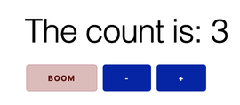
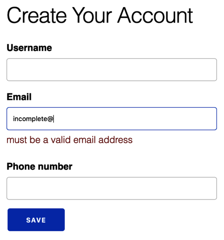

Phoenix LiveView
As the base infrastructure for channels matures, we’re seeing an acceleration of higher level libraries that take advantage of them. LiveView is the perfect example. In essence, it’s a library for building interactive, rich applications, that are bi-directional. That much is not new. Throughout the second half of this book, we’ve done very much the same thing with channels.
Here’s the best part, though. What if you could do the same thing without writing custom JavaScript? In this short section, we’ll walk you through how you can do exactly that. Don’t get us wrong. We love working with the Phoenix toolchain including JavaScript, but juggling fewer frameworks means more brainpower is available to attack the business problem.
Let’s look at how it all works. Conceptually, LiveView:
- Represents a web page as a function over web state
- Establishes messages and callbacks to change that state
- Allows browser events such as mouse clicks, form submits, and key presses to send events
Though it’s a young library, LiveView users are already pushing the boundaries of what can be done without writing JavaScript. It is excellent for a wide variety of scenarios from form validation and autocompletion to handling communication triggered by links and keystrokes. We’re not going to show you an exhaustive list of LiveView use cases, but we’d love to show you how some of the most important ones work.
To show the interplay of routes and events, we’ll walk you through a couple of simple examples and then show progressively more complex scenarios.
We’ll start with a static page and progressively move to more advanced examples. So that we can start with a foundation that’s going to stay up to date, we’ll walk you through the Phoenix LiveView Example.
Establishing a Static LiveView
To get things started, let’s build our own LiveView. For the simplest of examples, all of our code can live in two places: the router and the live view. First, let’s start with the router.
We’ve set up LiveView according to the project instructions. It takes about fifteen minutes or so the first few times. Once we’re done, we can add routes to router.ex, like this:
| | import Phoenix.LiveView.Router |
| | |
| | ... |
| | |
| | live "/welcome", WelcomeLive |
We import the LiveView router code and use one of the imports, the live function, to create a new route that points the /welcome route to a module holding a live view. Now we’re ready to create the live view. We’ll put it in lib/demo_web/live/welcome_live.ex, and make it look like this:
| | defmodule DemoWeb.WelcomeLive do |
| | use Phoenix.LiveView |
| | |
| | def render(assigns) do |
| | ~L""" |
| | <div> |
| | <h2>Welcome to LiveView, from Chris, José and Bruce</h2> |
| | </div> |
| | """ |
| | end |
| | |
| | def mount(_session, socket) do |
| | {:ok, socket} |
| | end |
| | end |
In every case, render/1 is a pure function that takes socket.assigns as its lone argument. This structure is functional programming at its finest. Because every LiveView page is a simple pure function, debugging is much easier than you might find in alternatives. We’ll unlock some complexity over time. For now, point your browser to our route, http://localhost:4000/welcome. You’ll see the message “Welcome to LiveView, from Chris, José and Bruce.”
Let’s shed some light on what’s happening after Phoenix calls the route. LiveView is a Phoenix Channels implementation so the live view for each end user will run in its own process. When router.ex has a live route, it will call the mount/2 function on that live view. The mount function’s job is to establish the initial state of the live view. Dutifully, our function returns an :ok tuple with an empty socket.
That’s not all, though. This function is analogous to an init function in an OTP GenServer. When that’s done, LiveView will render the initial view. We’ll simply render the HTML directly inline using the ~L""" sigil. As you might expect, this sigil does everything necessary to render a LiveView.
What we’ve built is not a one-time render. It actually starts a process and will loop over messages, calling render/1 each time there’s a new event.
Since pure HTML is not too interesting, let’s spice things up a little bit. Let’s set some state in the socket within our mount, like this:
| | defmodule DemoWeb.WelcomeLive do |
| | use Phoenix.LiveView |
| | |
| | def render(assigns) do |
| | ~L""" |
| | <div> |
| | <h2><%= @salutation %></h2> |
| | </div> |
| | """ |
| | end |
| | |
| | def mount(_session, socket) do |
| | salutation = "Welcome to LiveView, from the Programming Phoenix team!" |
| | {:ok, assign(socket, salutation: salutation)} |
| | end |
| | end |
We moved the changing text to the socket, and added a substitution to the LiveView. Now, you can get a better look at how we’ll encorporate changing state in the LiveView. We can simply define fields in socket.assigns, and access those directly to do substitutions in LiveView. Whenever that state changes, Phoenix LiveView will use channels to make sure that the changes (and only the changes) to our state make it down to the client.
So the initial lifecycle for a LiveView before we consider events looks like this:
| | live(url, LiveView) |
| | |> mount |
| | |> render |
You’ve already seen the basics so it’s time to add some interaction. Let’s take a look at an example with some interaction, a clock.
Processing Events in a Clock
Now that you know how to handle an inbound route with the live macro, let’s go to the ClockLive view within the Phoenix LiveView example project for help with the next example. We’ll look at a clock. To keep things simple, we’ll strip out a few of the bells and whistles.
In this case, we’ll use the Erlang :timer module to send periodic messages to the end user’s live view process. Here’s how it works.
First, establish a route in lib/demo_web/router.ex, like this:
| | live "/clock", ClockLive |
We create a route that will go to our live view. Now, let’s take a look at a live view. For reference, if you are looking at the example, the file is in lib/demo_web/live/clock_live.ex. It won’t look exactly like this one, but it will be close:
| | defmodule DemoWeb.ClockLive do |
| | use Phoenix.LiveView |
| | import Calendar.Strftime |
| | |
| | def render(assigns) do |
| | ~L""" |
| | <div> |
| | <h2>It's <%= strftime!(@date, "%r") %></h2> |
| | </div> |
| | """ |
| | end |
That’s easy enough. We render a view, with just a little bit of dynamic data, a @date field in assigns. We’ll initialize that value when we mount, and also trigger a periodic message to our process like this:
| | def mount(_session, socket) do |
| | if connected?(socket), do: :timer.send_interval(1000, self(), :tick) |
| | |
| | {:ok, put_date(socket)} |
| | end |
| | |
| | defp put_date(socket) do |
| | assign(socket, date: :calendar.local_time()) |
| | end |
In the mount function, we call :timer.send_interval to send a simple :tick message every 1000 milliseconds to the self() PID, the id for our process. Then, we call a private function called put_date that uses assign to initialize the @date field in socket.assigns to the current date and time,so LiveView can render it after we mount.
We still have one more job to do. We need to handle the :tick message, like this:
| | def handle_info(:tick, socket) do |
| | {:noreply, put_date(socket)} |
| | end |
| | end |
Marvelous! Handling the :tick message is a simple handle_info. That’s because under the hood, this LiveView is a GenServer! Straight process messages come in through handle_info.
The only thing we need to do is to call our existing put_date(socket) to update the socket with the current timestamp.
Browse on over to http://localhost:4000/clock and you’ll see the counting date! Keep in mind that we didn’t have to create any custom JavaScript. Phoenix is sending down only the parts of the page that need to change.
Let’s see how LiveView handles incoming events from the web page. Let’s build a simple counter.
Handling Links in a Counter
Let’s say you had a web page and a few links on it for interacting with some server side content. We could build a Phoenix MVC application. We’d have to establish a separate route for each link and form. We’d then need to add in a controller, a view, and we’d need to render HTML, either with functions or via a template. We’d also possibly need some backend logic, fronted by a context.
Alternatively, we could build a channel and make all communication flow over a channel. We’d segregate all backend code in the context, just as we do for MVC apps. That’s a drastic improvement in user experience, and the only cost is that we have to commit to working in two languages, JavaScript and Elixir. Still, we can do better.
With LiveView, for the simplest of scenarios, all of our code can live in two files, the live view and the route. Once we get to the point where we need to segregate code, we are still free to break backend code into a context, and frontend code into functions or templates. Let’s take a look.
In lib/demo_web/router.ex, you’ll see the familiar live route, like this:
| | live "/counter", CounterLive |
Next, let’s look at the live view. First, here’s the counter code we’re rendering from the example in lib/demo_web/live/counter.ex:
| | defmodule DemoWeb.CounterLive do |
| | use Phoenix.LiveView |
| | |
| | def render(assigns) do |
| | ~L""" |
| | <div> |
| | <h1>The count is: <%= @val %></h1> |
| | <button phx-click="boom" class="alert-danger">BOOM</button> |
| | <button phx-click="dec">-</button> |
| | <button phx-click="inc">+</button> |
| | </div> |
| | """ |
| | end |
This render function is starting to have some real meat on the bones. After the initial ceremony that defines the module and the use LiveView directive to announce our intention to use LiveView directives, we do the work to render our page. First we have a heading with our count, @val.
After the initial heading, we have three buttons. One calls an unsupported message called boom. The other two operate our counter. The only difference from pure HTML is that they support data attributes called phx-click. This attribute signals the JavaScript code on the client to send a Phoenix Channels message to the client!
You can already imagine what the rest of the app looks like. Here’s the initial mount:
| | def mount(_session, socket) do |
| | {:ok, assign(socket, :val, 0)} |
| | end |
We must initialize every assigns field so our mount function establishes the initial value of our counter, a :val of 0. Then, we build the functions to handle our events and update the server, like this:
| | def handle_event("inc", _, socket) do |
| | {:noreply, update(socket, :val, &(&1 + 1))} |
| | end |
| | |
| | def handle_event("dec", _, socket) do |
| | {:noreply, update(socket, :val, &(&1 - 1))} |
| | end |
| | end |
These are custom LiveView events, but they work just like messages. The channel process for a given user will get a handle_event message each time that user clicks on an element with a phx-click data attribute. In this case, we have events for inc and dec. They both work the same, so let’s look at just the inc message.
We send a :noreply tuple, updating the :val field in socket with an anonymous function to increment a counter, and…
we’re done! There’s no additional route for each action, no custom JavaScript to parse the result, no work to determine which pieces of the page change and which stay the same. LiveView handles it all.
Typically, the handle_event will update the state in some way, but it doesn’t have to. Let’s take a look at a third use case, command-line completion.
Here’s what the pipeline looks like for an arbitrary event:
| | handle_event(event, data, socket) |
| | |> render |
While we’re here, open up your browser and navigate to the counter page. Increment the counter a couple of times and you’ll see the count update. Notice that it’s extremely snappy! It will usually remain so once you deploy it live.
Let’s try one more thing. Remember, channels is built on OTP, and it wouldn’t be an OTP demo without some kind of a crash. Click the boom button. We haven’t implemented boom yet, so when you flip over to your Phoenix server tab, you’ll see a stack trace like this one:
| | [error] GenServer |
| | ** (FunctionClauseError) no function clause matching in |
| | DemoWeb.CounterLive.handle_event/3 |
| | (demo) lib/demo_web/live/counter_live.ex:24: |
| | DemoWeb.CounterLive.handle_event("boom", "", |
| | %Phoenix.LiveView.Socket{assigns: %{val: 2}, |
| | changed: nil, connected?: true, ...}) |
| | ... |
Since we’re on OTP, our supervisor will start again! You’ll see a brief reloading indicator. Then, you can go back to your browser to see the counter, restarted to zero. Click it a few times. It still works:

Now that we can process links, we are ready to take the next step. Let’s take an interactive use case for forms, autocomplete.
Implementing Autocomplete Forms
Command-line completion is typically a tedious use case that is a headache to implement but also tremendously useful for users. This is what it looks like with LiveView.
Rather than show you all of the example, let’s look at the bits that do the most work.
First, here’s the view:
| | def render(assigns) do |
| | ~L""" |
| | <form phx-change="suggest" phx-submit="search"> |
| | <input type="text" name="q" value="<%= @query %>" list="matches" |
| | placeholder="Search..." <%= if @loading, do: "readonly" %>/> |
As you might expect, the form is a pure HTML form. We tag the form with two attributes. phx-change triggers an event when anything on the form changes and phx-submit triggers an event whenever a user submits a form.
Note that we also introduce a @loading field so we can disable the text field when we’re loading results.
Next, let’s look at the real HTML work, the rendering of the results.
| | <datalist id="matches"> |
| | <%= for match <- @matches do %> |
| | <option value="<%= match %>"><%= match %></option> |
| | <% end %> |
| | </datalist> |
| | <%= if @result do %><pre><%= @result %></pre><% end %> |
| | </form> |
| | """ |
| | end |
We present the results in two pieces: the @matches that we return on phx-change and the @result we return on phx-submit.
We use for to produce an option for each of the @matches. We then conditionally display a @result if one exists.
Here’s the cool part. LiveView will only send down the parts of the page that need to change! If any typing triggers no change, the user’s browser will not get an update command!
Here’s the handle_event that processes the suggest message that we asked for with the phx-change data attribute:
| | def handle_event("suggest", %{"q" => query}, socket) |
| | when byte_size(query) <= 100 do |
| | |
| | {words, _} = |
| | System.cmd("grep", ["^#{query}.*", "-m", "5", "/usr/share/dict/words"]) |
| | {:noreply, assign(socket, matches: String.split(words, "\n"))} |
| | end |
Note that this command is specific to Unix! This code simply calls an OS shell command to look for results in a system dictionary and sets the state based on the results.
Now, let’s look at a form submit:
| | def handle_event("search", %{"q" => query}, socket) |
| | when byte_size(query) <= 100 do |
| | |
| | send(self(), {:search, query}) |
| | { |
| | :noreply, |
| | assign( socket, |
| | query: query, |
| | result: "Searching...", |
| | loading: true, |
| | matches: []) |
| | } |
| | end |
| | |
| | def handle_info({:search, query}, socket) do |
| | ... do search ... |
| | end |
We send an asynchronous message to ourselves so that we can report back to the user while the system loads the results. As this application gets more robust, we can break out the search and autocomplete business logic into its own context.
If you’d like, you can open up the developer’s tools for your browser. In Chrome, you can do so by inspecting an element on the page and then clicking on the network tab. Type a few characters and you’ll see that LiveView is sending down only the precise parts of the page that change!
We’ve touched on a basic form submission. Let’s take on a more complex problem, form validation.
Validating Forms
You have seen the main two LiveView events. phx-change fires on each form change and phx-submit fires on submit. Form validation is an especially tedious use case for most web applications, but they are tremendously useful to users.
When a user’s head space can stay in one place, a live view, the problem gets much easier to solve. Once again, we’ll go to the LiveView examples to find the user_live demonstration.
In this file, you’ll find a more practical production code organization. In lib/demo/context, you’ll find an accounts context much like the one we built for Rumbl. We’ll use a few of these throughout the demo.
In lib/demo_web/live/user_live, you’ll find live views for various use cases. We’re going to focus on new.ex.
First, let’s look at the mount function:
| | def mount(_session, socket) do |
| | {:ok, assign(socket, changeset: Accounts.change_user(%User{}))} |
| | end |
Notice that we’re calling into our Accounts context to get a changeset for a User. Otherwise, the mount looks exactly like the other examples you’ve seen.
Next, let’s look at the render. It may surprise you:
| | def render(assigns) do |
| | Phoenix.View.render(DemoWeb.UserView, "new.html", assigns) |
| | end |
For the first time in one of these examples, you see us render a template directly. We can also render other live views, but this one is similar to the simple template Phoenix generates for a new generated resource. It’s a skinny wrapper that in turn renders a form with fields that look like this:
| | f = form_for @changeset, |
| | "#", |
| | [phx_change: :validate, phx_submit: :save] |
| | ... |
| | label f, :username |
| | text_input f, :username |
| | error_tag f, :username |
| | ... |
There are no surprises here. We simply add the data attributes for phx_change and phx_submit. The main thing to note for the rest of the form is that we have the error_tag fields that will show messages for a changeset when errors are present. Again, this code is not LiveView specific. These look exactly as they would for any other MVC style template.
Let’s see what happens when a user submits a form:
| | def handle_event("save", %{"user" => user_params}, socket) do |
| | case Accounts.create_user(user_params) do |
| | {:ok, user} -> |
| | {:stop, |
| | socket |
| | |> put_flash(:info, "user created") |
| | |> redirect(to: Routes.live_path(socket, UserLive.Show, user))} |
| | |
| | {:error, %Ecto.Changeset{} = changeset} -> |
| | {:noreply, assign(socket, changeset: changeset)} |
| | end |
| | end |
This code is remarkably simple. We use our context to create the user. Based on the results, we either redirect directly to another live view, or we assign the :changeset with errors to our existing socket.
That’s all we need to do to get full validation! If you type a partial email address, you’ll get an error code until the email you type is valid, like this:

We’ve just coded validation with a full interactive experience, but with less effort than we would put into an old school MVC application. The end result is snappy, highly interactive, and easy to code.
Learning More
We’ve just scratched the surface. LiveView can process other kinds of events too, including keystrokes. It’s not built for games but it’s fluid and efficient enough to build them easily. Let’s briefly highlight some of the LiveView features you have not seen yet.
-
Live views can render other live views like this: live_render(@socket, DemoWeb.ImageLive)
-
When LiveView sends down new content for a page, it sends down only changes since the last render. If there are no changes, nothing is sent.
-
LiveView can handle other kinds of events too, including keystroke events for both key up and key down.
-
It works seamlessly with Phoenix PubSub. Therefore, you can push changes down to the page at any time, like we did with channels.
You can see how LiveView might reshape how we write many of the web applications that we develop every day. With it, you get three huge wins. You’ll write much less code to solve a given problem; you won’t have to become a JavaScript expert to build a nice interactive application; and you don’t need to think about sending data between the client and the server. Removing those burdens will represent tremendous gains for the typical Phoenix developer.
Now that you’ve seen what’s happening in LiveView, it’s time to move on to one of the foundational libraries that makes Phoenix click, the PubSub layer.